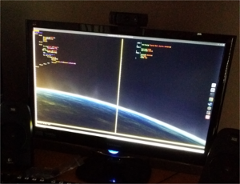
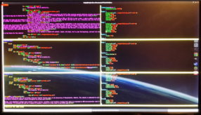
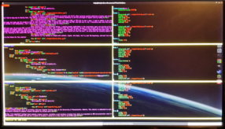

[hsilvey@umass ~]$ cat website.txt_

What it is
I decided to create a website to showcase my projects and skills after pursuing several ambitious projects and realizing I had no easy way to display them. This website is essentially my attempt at creating something to aid the portrayal of myself with my resume.
My background
When I started, I hadn't edited an HTML or CSS file in over a year. I used to dabble in the subject area, but never got far enough to want to learn JavaScript or PHP. I learned the basic HTML and CSS, and that was it. So, I basically came into this project without a real background... and I opened up an intro to HTML page to help me along.
The process
After playing around with different markup, I quickly became comfortable in the environment again and started writing CSS with ease. My previous HTML and CSS sites were sloppy in execution, and I realized that this time through. My goal in this project was to then create an efficient and elegant website, which could easily display my projects and achievements without hassle. As of v1.0, I think I have achieved that basic goal. I attempted to teach myself some PHP partway through to add dynamically changing HTML, but soon figured out that the host I am using does not actually support PHP. So, sticking to the simple HTML and CSS, I created everything from scratch.
 The future
This website will be updated as needed with content, layout, and style. v1.0 is just the beginning, and much lies ahead in the future for this website!
I decided to create a website to showcase my projects and skills after pursuing several ambitious projects and realizing I had no easy way to display them. This website is essentially my attempt at creating something to aid the portrayal of myself with my resume.
My background
When I started, I hadn't edited an HTML or CSS file in over a year. I used to dabble in the subject area, but never got far enough to want to learn JavaScript or PHP. I learned the basic HTML and CSS, and that was it. So, I basically came into this project without a real background... and I opened up an intro to HTML page to help me along.
The process
After playing around with different markup, I quickly became comfortable in the environment again and started writing CSS with ease. My previous HTML and CSS sites were sloppy in execution, and I realized that this time through. My goal in this project was to then create an efficient and elegant website, which could easily display my projects and achievements without hassle. As of v1.0, I think I have achieved that basic goal. I attempted to teach myself some PHP partway through to add dynamically changing HTML, but soon figured out that the host I am using does not actually support PHP. So, sticking to the simple HTML and CSS, I created everything from scratch.
 The future
This website will be updated as needed with content, layout, and style. v1.0 is just the beginning, and much lies ahead in the future for this website!
Posted: 12-23-2014